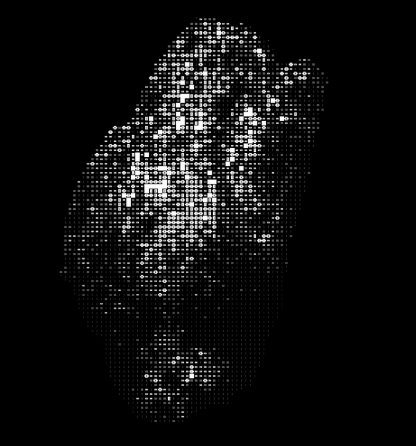
BLACK / NO.001
ROCK
단단한 표면, 깊은 무게감.
CONCEPT / 조향 성분 정보가 아닌 감각적 해석입니다.

눈에 보이는 것 너머,
향으로 남는 감각.
One letter shifts. A different sense begins.
One letter shifts. A different sense begins.
(01)OUR PHILOSOPHY
 see.
see. More to sense.
More to sense. 
시각을 잠시 내려놓고, 향에 집중하는 순간.
NOISE는 그 작은 전환에서 시작합니다.
(02)TWO FREQUENCIES
깊이 머무는 감각과 가볍게 번지는 감각.
서로 다른 두 주파수 사이에서,
당신에게 가까운 향을 탐색하세요.

(02)TWO FREQUENCIES
깊이 머무는 감각과 가볍게 번지는 감각.
서로 다른 두 주파수 사이에서,
당신에게 가까운 향을 탐색하세요.

(03)THE COLLECTION
이름에서 시작하는 향의 탐색.
카드를 열어 감각의 인상을 읽어보세요.

BLACK / NO.001
단단한 표면, 깊은 무게감.
CONCEPT / 조향 성분 정보가 아닌 감각적 해석입니다.
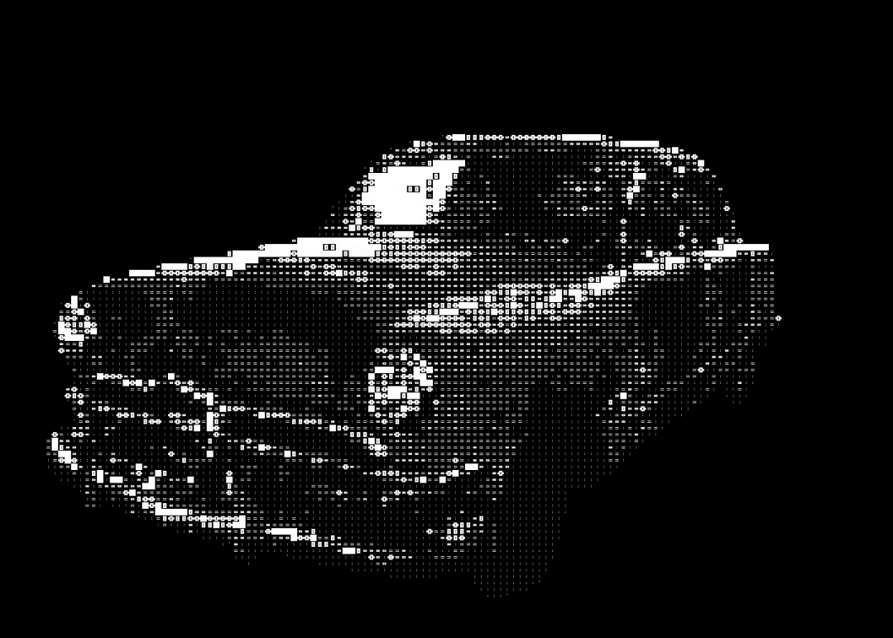
BLACK / NO.021
시간이 남긴 거친 질감.
CONCEPT / 조향 성분 정보가 아닌 감각적 해석입니다.
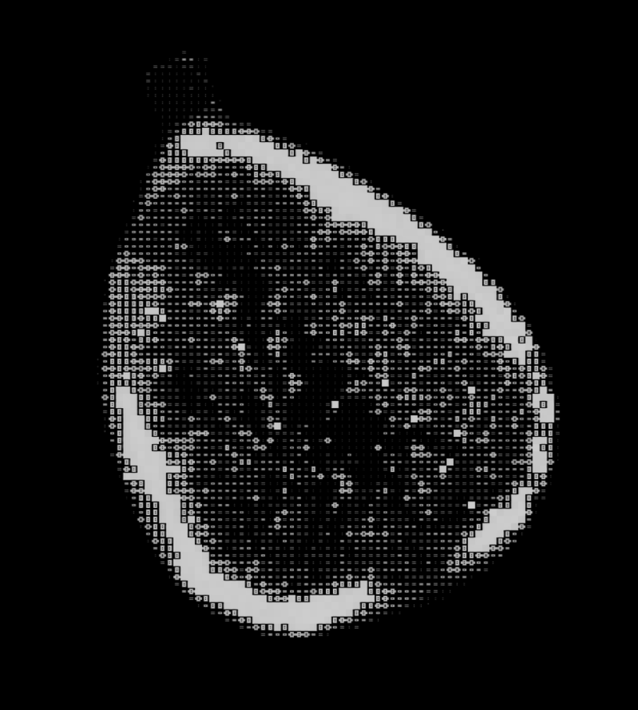
BLACK / NO.043
짙은 그늘 속에 머무는 인상.
CONCEPT / 조향 성분 정보가 아닌 감각적 해석입니다.
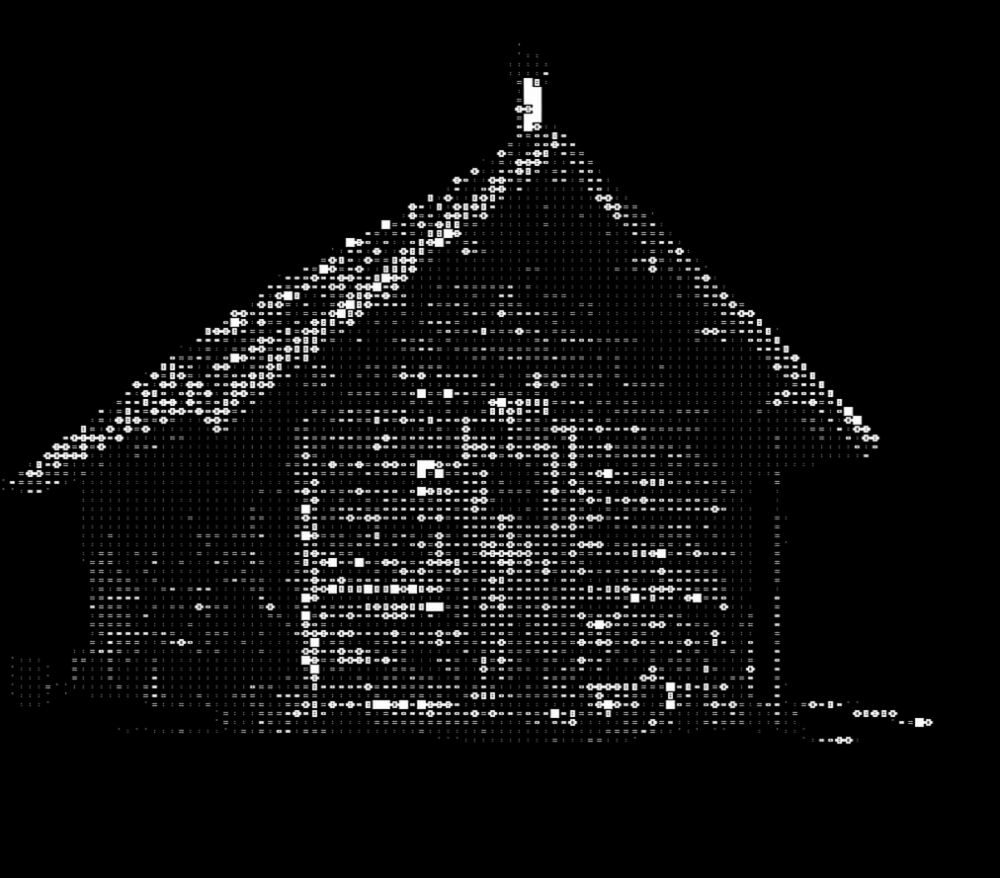
BLACK / NO.058
오래된 공간의 고요한 잔상.
CONCEPT / 조향 성분 정보가 아닌 감각적 해석입니다.
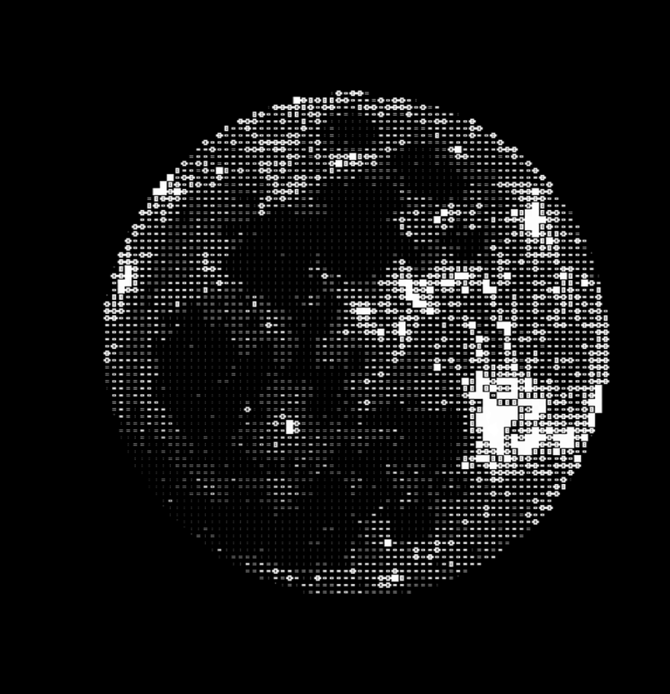
BLACK / NO.079
차가운 밤, 낮게 가라앉은 빛.
CONCEPT / 조향 성분 정보가 아닌 감각적 해석입니다.
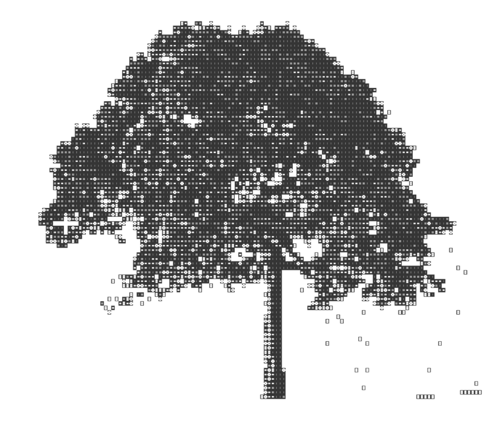
WHITE / NO.101
빛을 통과하는 초록의 인상.
CONCEPT / 조향 성분 정보가 아닌 감각적 해석입니다.
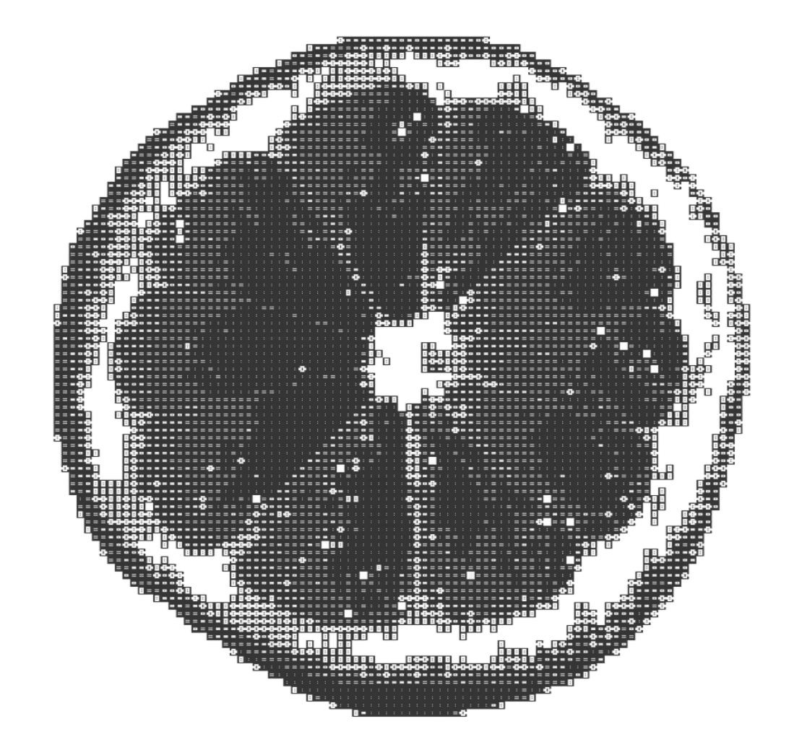
WHITE / NO.119
밝은 선명함과 건조한 표면의 대비.
CONCEPT / 조향 성분 정보가 아닌 감각적 해석입니다.
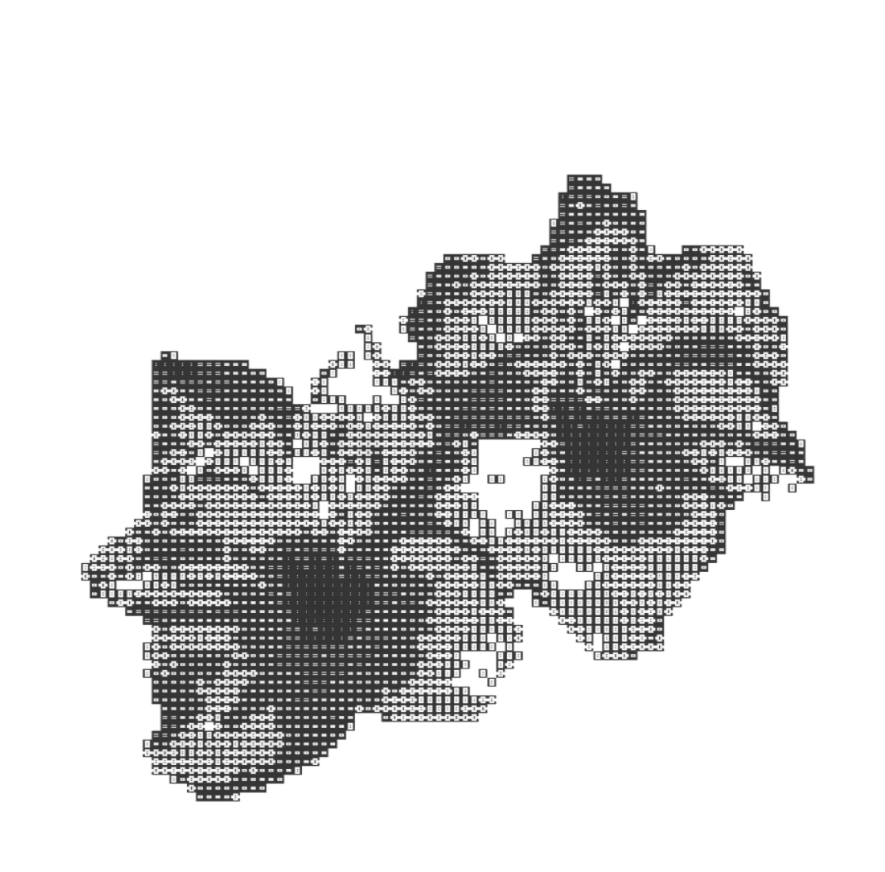
WHITE / NO.138
조용히 펼쳐지는 흰 여백.
CONCEPT / 조향 성분 정보가 아닌 감각적 해석입니다.
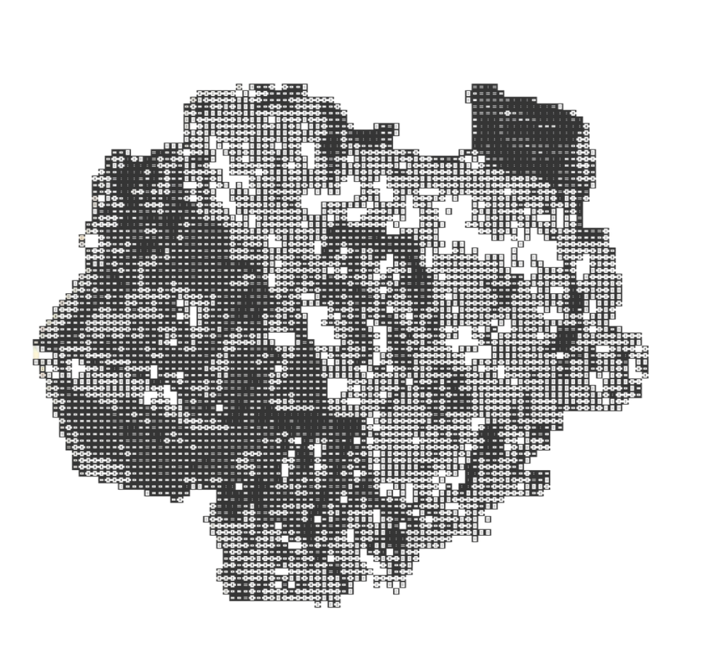
WHITE / NO.162
열린 수평선과 가벼운 공기.
CONCEPT / 조향 성분 정보가 아닌 감각적 해석입니다.
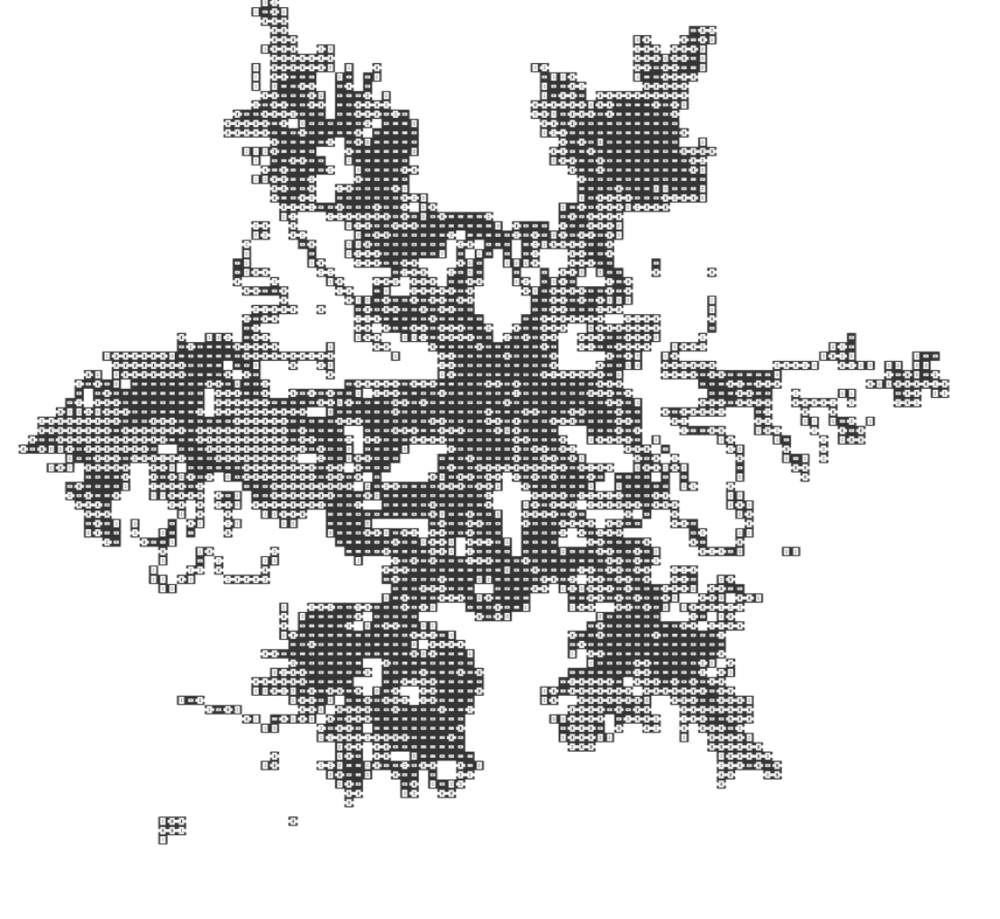
WHITE / NO.184
소리가 잦아드는 맑은 순간.
CONCEPT / 조향 성분 정보가 아닌 감각적 해석입니다.
PACKAGE GRAPHICS / 패키지 앞면 원본 그래픽 · 감각 노트는 콘셉트 해석입니다.
지금, 더 끌리는 감각을 선택해 보세요.
선택한 컬렉션으로 이어집니다.
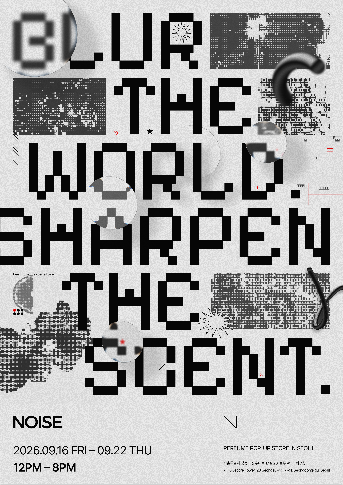
BEYOND WHAT YOU SEE
흐릿한 세상 속,
선명하게 남는 나만의 감각.